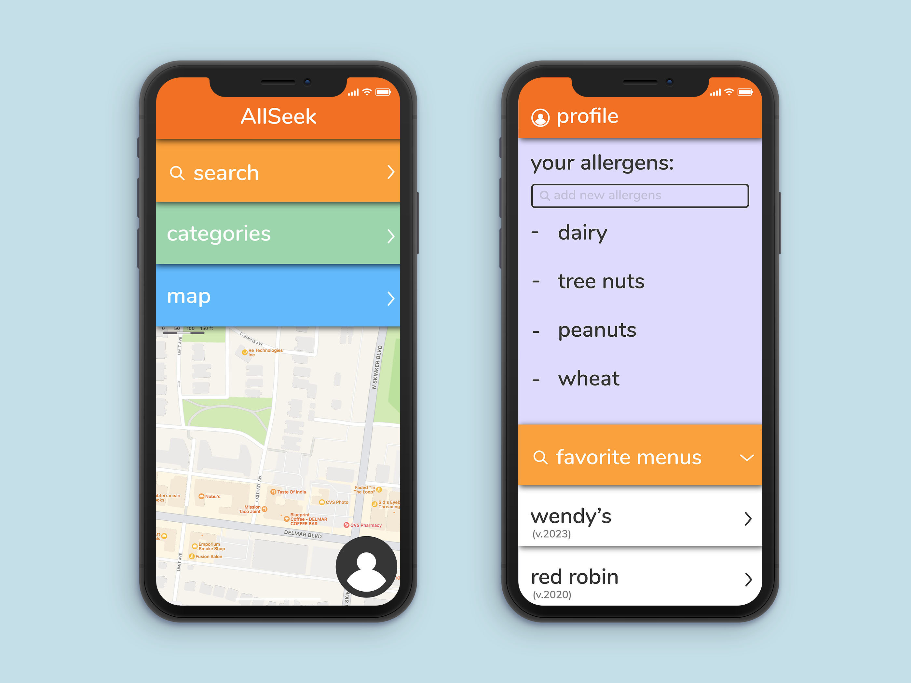
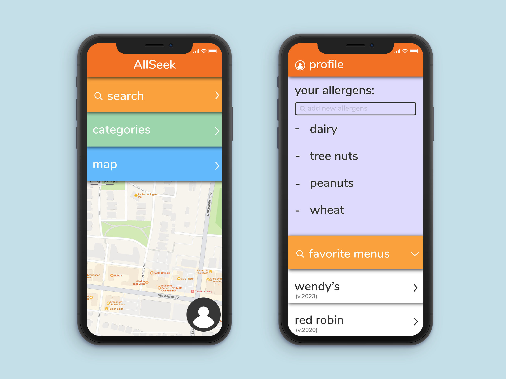

Galen Aubrey Hicks
AllSeek app concept
AllSeek is an application that was designed to help people with allergies find restaurants with
allergen menus with ease, as well as access all of these allergen menus in one consolidated place.
With AllSeek's map, users can easily see where to find allergen friendly food places around them;
they can also see suggestions for food that doesn't contain the specific allergens that they themselves are allergic to.
A few preliminary design directions, before the final:
 

Some of the main concerns that I had while designing this product was how to make the application as simple and easy to use as possible.
The app's purpose is to make it easy to find places to eat that have allergen menus readily available, and also to make it easy to tell
if those places had food without your allergens.
In order to achieve this, I decided to make the map the largest part of the main screen; the pin icons
indicate that those restaurants have allergen menus. When you click on a restaurants corresponding pin, you get more information about the restaurant and dishes that don't
contain your allergens will autopopulate at the bottom. This function is based on the profile you would have built upon downloading the app, indicating
ingredients that you are allergic to by checking them on a comprehensive list.
Two screens from the final design direction: the home screen and the user profile screen.